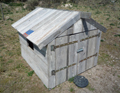
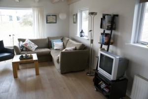
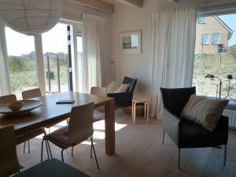
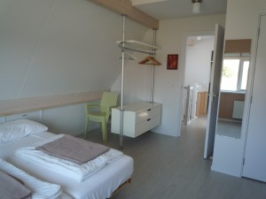
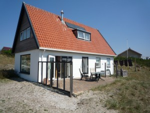

De totale woonoppervlakte bedraagt 100m2; het huis staat rondom vrij op bijna 1400 m2 duingrond met een terras op het zuiden.Het huisje heeft centrale verwarming, een zonneboiler zorgt voor warm water.
Begane grond: entree met toilet, woonkamer met half-open keuken (met combimagnetron en vaatwasmachine), 1 tweepersoons slaapkamer met douche, bijkeuken met wasmachine en droogtrommel.
Bovenverdieping: kleine overloop, 2 grote slaapkamers, badkamer met douche, wastafel en toilet.
In het Konijnehol wordt niet gerookt en huisdieren zijn niet toegestaan.
Zelf meenemen: beddengoed, handdoeken, keukendoeken. Het is ook mogelijk om linnengoed te huren.

woonkamer

de eettafel en openslaande terrasdeuren

rechter slaapkamer boven

het terras